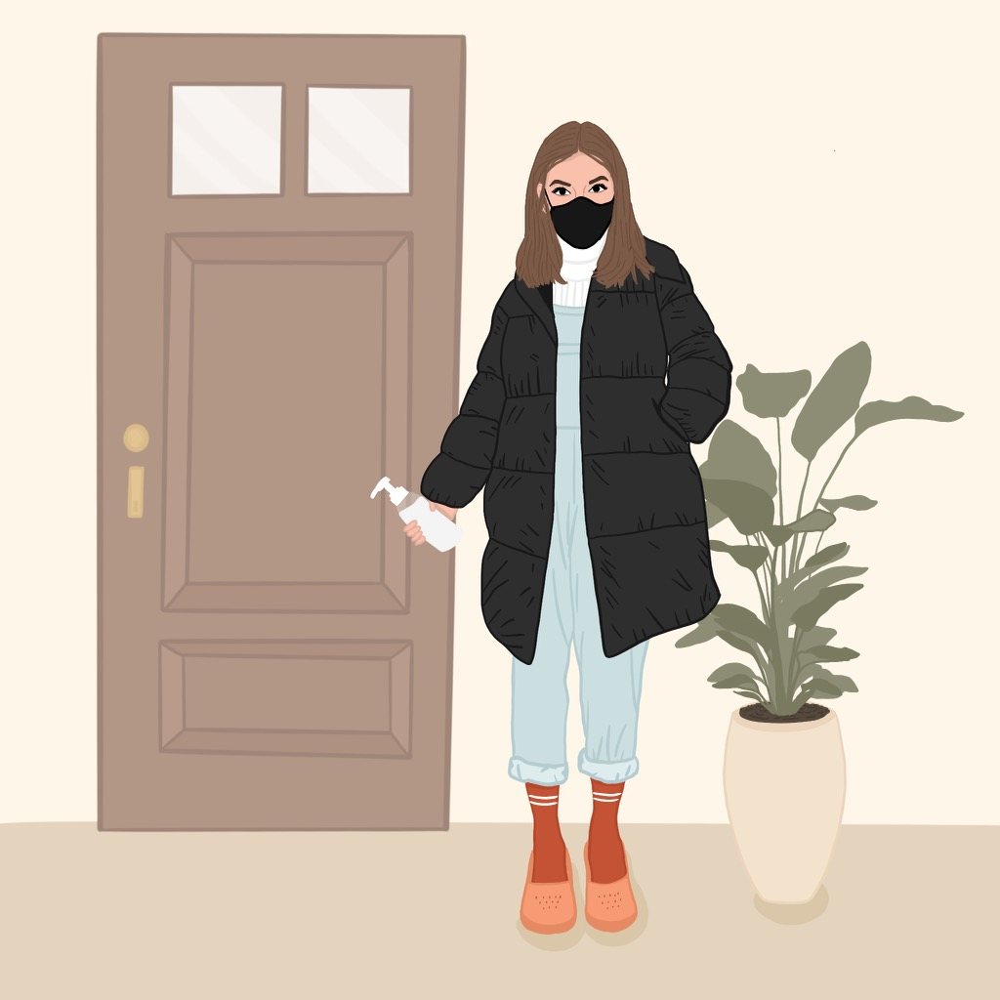

How To: Kill Your Plants.

Step 1: Overwater that Puppy
According to the Smart Plant Guide, "Most houseplants need to be watered every 1-3 weeks. You should monitor your houseplants and water when they need it, rather than on a schedule. Frequency of watering will depend on the size and type of plant, size and type of pot, temperature, humidity and rate of growth." In other words, while you're completing online schooling, working from home, and experiencing a global pandemic; using your tears to water your plants may lead to killing those plants as they may experience overwatering.

Step 2: Disease
This year we have all learned about disease. Although plants can't catch Corona Virus (that we know of so far) there are several viruses you need to look out for to protect your plant babes. University of Maryland reported, "Symptoms of virus infections include necrotic spots, abnormal dark green and light green mosaic and mottling patterns (streaking or light and dark green or yellow patches) of leaves, distorted or stunted growth, necrotic, or yellow ring patterns on the foliage, enations or bump like growths, and abnormal flower coloration or formation." Get your hand sanitizer out once again, because your plants could even be getting these viruses from you! Big surprise I know! They state, "Tobacco products often have a virus called tobacco mosaic virus (TMV) in them that remains infective for long periods of time and can be transferred to healthy plants by people who handle these products." So don't touch you face or your plants without washing those hands!

Step 3: Too Much Care
While you might need some extra self care this year, turns out your plants may not!? A plant blog, Invincible Houseplants, says "Some hardy species are actually pretty happy if you neglect them slightly. Many house plants are actually hard to kill (if you ever wanted to) and require very little attention. Cacti and succulents are great examples of course, but not the only ones." Neglecting your children, no! Neglecting your plant children, ehh? might be alright!